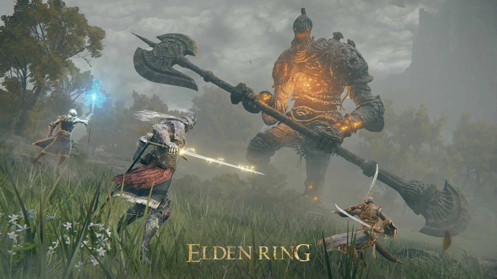
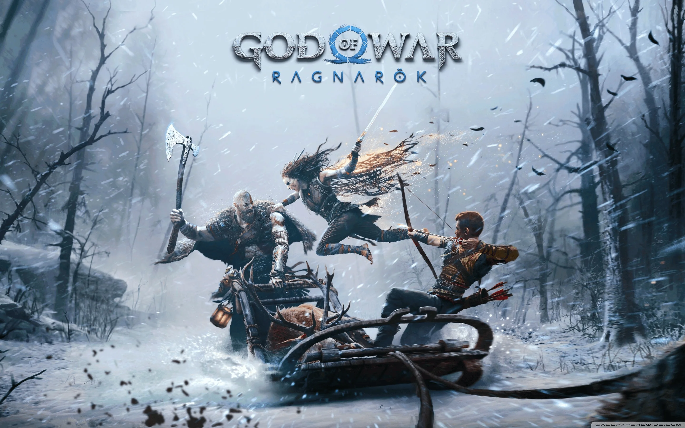
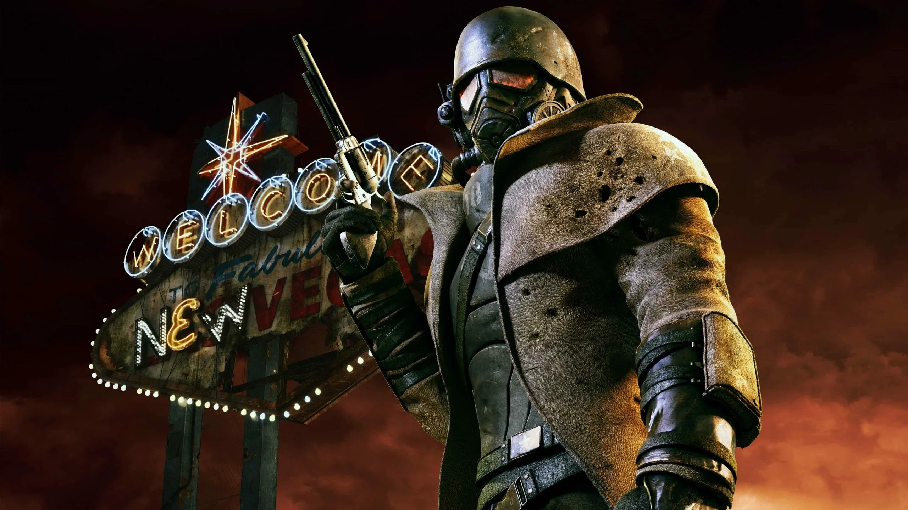
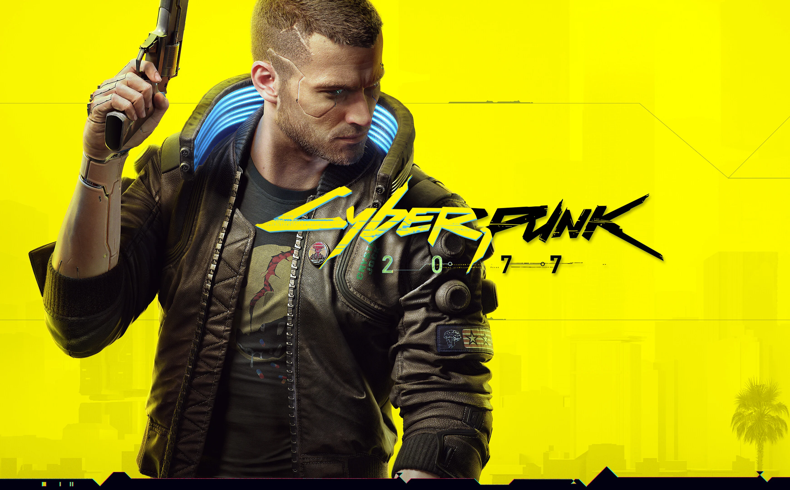
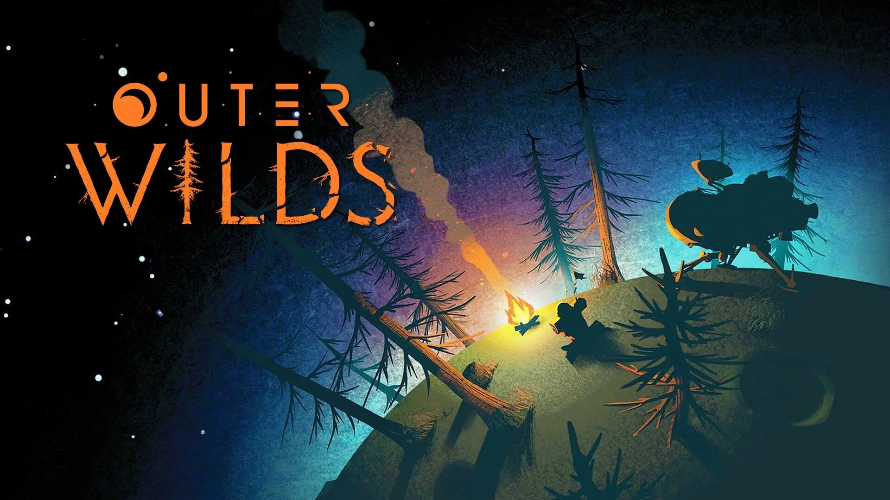

RPG | Soulslike92
Elden Ring
Mundo abierto, jefes imposibles y esa hermosa costumbre de morir, aprender y volver con más bronca.
Leer análisisGame Critic
Reseñas honestas, scores claros y análisis pensados para saber si un juego realmente vale tu tiempo, tu plata y tus horas de sueño.
Promedio de reviews destacadas
Catálogo

RPG | SoulslikeMundo abierto, jefes imposibles y esa hermosa costumbre de morir, aprender y volver con más bronca.
Leer análisis
Acción / AventuraUna aventura cinematográfica, intensa y emocional. Kratos sigue pegando, pero ahora también procesa traumas.
Leer análisis
Action | RPGDecisiones, facciones, desierto nuclear y una libertad narrativa que todavía le pasa el trapo a varios juegos actuales.
Leer análisis
RPG | Open WorldDe desastre técnico a experiencia futurista sólida. Night City por fin funciona como prometía.
Leer análisis
Indie GOTYExploración espacial, misterio y un bucle temporal que convierte la curiosidad en la mecánica principal.
Leer análisisCapcom entendió el encargo: modernizar sin romper lo que ya era una leyenda del survival horror.
Leer análisisSistema de análisis
Controles, combate, ritmo, dificultad y sensación general al jugar.
Narrativa, personajes, mundo, diálogos y peso emocional.
Dirección visual, escenarios, identidad estética y ambientación.
Optimización, estabilidad, bugs y experiencia técnica general.
Review completa
Elden Ring toma la fórmula Souls y la expande hacia un mundo abierto enorme, hostil y lleno de secretos. No es un juego que te explique todo: te suelta en el mapa y confía en que la curiosidad haga el resto.
Su mayor virtud está en la libertad. Podés seguir el camino principal, perderte en cuevas, encontrar jefes opcionales o terminar en una zona donde claramente no deberías estar todavía. Y sí, probablemente te destruyan. Pero ahí está la gracia.
Una aventura enorme, difícil y memorable. No es para todos, pero quien entra en su lógica encuentra una de las mejores experiencias del género.
Categoría
Categoría
Categoría
Categoría